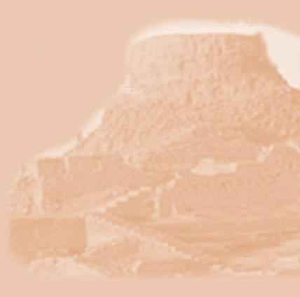

|  |  |  |  |  |

|
 |
 |
 |
  |
|
Click here to explore the Mound. Click here to explore the Lower Town. For information about our sanitation system, which has no equal in the world, click on Water and Sewer.  The Mound, also called the Citadel, is the center of our community life. As tall as five men standing on top of one another, it was built on a mound of sun-dried bricks and rubble. The Citadel is surrounded by a wall of fired bricks. Timbers harvested from the vast forests of our realm fortify the wall. For security, watchtowers rise along parts of the Citadel wall.
Atop the mound is the Great Bath, a structure 39 feet by 23 feet and 8 feet deep. The floor of the Great Bath consists of tightly fitted bricks sealed with tar. Here, citizens can purify themselves during religious ceremonies. A series of rooms used for private cleansings lie along the eastern edge of the Great Bath. Our priests reside in a large building next to the Great Bath.
Near the Citadel is our cemetery, where our dead are laid to rest in wooden coffins. Although we are a wealthy society, we do not waste our gold on fancy tombs. Nor do we bury our dead with anything other than a simple ornament and some pottery vessels. Instead, we pass our worldly goods on to our descendants so that our generosity may enrich them and give them pleasure.
The Citadel also includes a crafts quarter, where workers produce beads, ornaments, and other fine goods from clay, shell, and stone. To the east of the Citadel is the Lower Town. Here, along the streets and lanes, are the dwellings of the people and the merchants’ shops. Such an orderly arrangement makes getting around in Mohenjo-Daro an easy business. Our central
drainage and water system contributes greatly to the quality of
life of our citizens. Along our main thoroughfares, you’ll
find brick drains to carry runoff water. This system serves the
entire city, carrying wastewater away from every home and business
through clay pipes. All citizens have access to fresh water from
easily accessible wells. Many houses and businesses have their own
well, though some wells serve a neighborhood. |